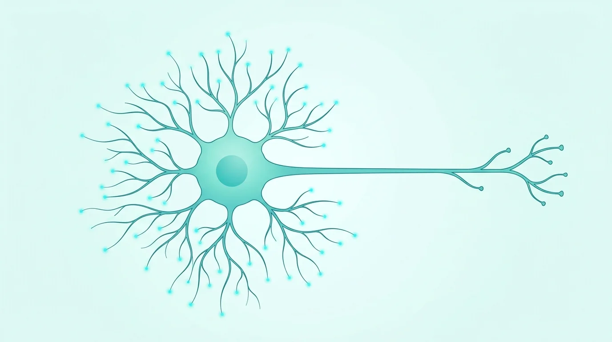

İyi bir tedavi, doğru bir teşhisle başlar.
Kapsamlı bir tanı, her nöroşirürjikal tedavinin temelidir. Amacımız, şikayetlerinizin nedenini mümkün olan en yüksek hassasiyetle belirlemek ve bu doğrultuda sizinle birlikte en uygun tedavi seçeneklerini kararlaştırmaktır.
Süreç, ayrıntılı bir hekim görüşmesi ve hedefe yönelik nörolojik ve nöroşirürjikal muayene ile başlar. Bu kapsamda kas gücü, duyu, refleksler, koordinasyon, yürüyüş ve ağrılı ya da işlev kaybı olan bölgeler değerlendirilir.
Şikayet tablosuna göre mevcut MR, BT ve röntgen görüntüleri titizlikle incelenir, klinik bulgular ve şikayetlerinizle eşleştirilir. Gerekirse ileri tetkikler planlanır. Acil görüntülemeler doğrudan kliniğimizce organize edilir; planlı diğer tetkikler sevk eden hekimlerce yürütülür.
Sinir ve kas fonksiyonlarını objektif olarak değerlendirmek için kliniğimizde doğrudan nörofizyolojik incelemeler yapıyoruz. Soruya bağlı olarak elektronörografi (ENG/IHS), F dalgaları, elektromiyografi (EMG) ve uyarılmış potansiyeller bu kapsamdadır.
Karmaşık veya belirsiz tablolarda klinik muayene, görüntüleme ve nörofizyoloji sonuçlarını birleştiriyoruz. Gerekirse tanısal enjeksiyonlar veya diğer uzmanlık yöntemleriyle tanıyı tamamlayarak kişiye özel bir tedavi planı oluşturuyoruz.
Sinir ve kas fonksiyonlarını objektif değerlendirmek için nörofizyolojik tetkikleri doğrudan kliniğimizde uyguluyoruz. Klinik soruya göre ENG, F dalgaları, EMG ve uyarılmış potansiyeller incelenir.
Bu incelemeler, sinir sıkışmalarını, hasarlarını veya fonksiyonel bozuklukları tam olarak lokalize etmeye ve ciddiyetini belirlemeye yardımcı olur. Bulgular her zaman klinik tabloyla birlikte yorumlanır.

Hedefimiz: Anlaşılır bir tanı, şeffaf tedavi kararları ve size özel kesintisiz tıbbi destek.